The Economist
A serif nameplate reversed out of a solid red block.
The block is the logo: it holds at any size, and the red has been the paper's flag for decades.
Three rounds and 32 concepts missed for one reason: they feel like software or a startup. The brands below feel like institutions or publications. This board puts the two side by side and turns the difference into a brief.
Reference logos are other companies' trademarks, collected for internal study only and never for use on the site. Sources and notes: logos/references.md.
Each at the same height, on white and on near-black, with the devices that make it feel settled.
A serif nameplate reversed out of a solid red block.
The block is the logo: it holds at any size, and the red has been the paper's flag for decades.
A monogram set in a block, beside tracked serif capitals.
The salmon pink is the paper itself: one colour carried as identity, nothing drawn.
A heavy condensed grotesque, stacked tight in three lines.
The shield is inherited Harvard heraldry; it works only because they own the heritage.

A heavy sans with tight tracking, and no symbol at all.
One violet used as a flag across every surface; the word does all the work.
One abstract symbol: a disc cut by parallel diagonals.
A plain, settled sans beside it, in one ink; no colour, no object, no idea to decode.
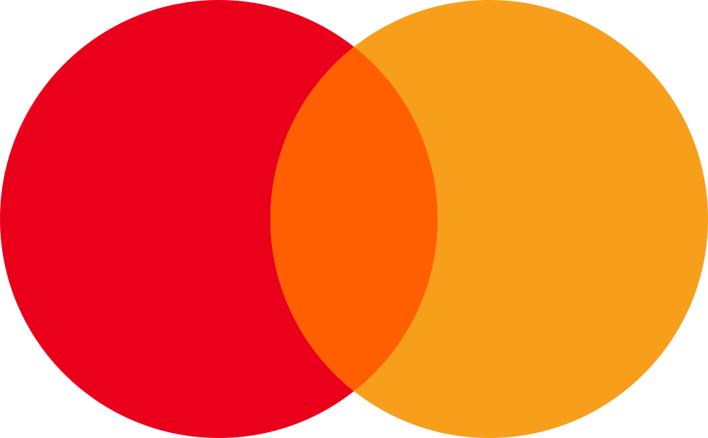
An abstract symbol of two overlapping discs.
Flat colour, no name, no picture of a card: two primitives carry a global brand.
Three ellipses as a symbol, then a heavy serif wordmark.
Black only; the symbol is pure geometry and the type looks set, not drawn.
A solid disc with negative-space cuts, and a bold grotesque.
The one with an animal, but abstracted into a single disc and one ink.
Mark above, lockup below, light versions on white. Read each round against row 1.


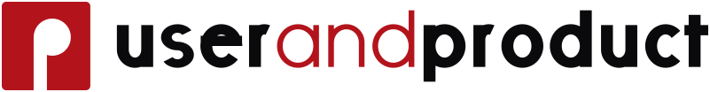
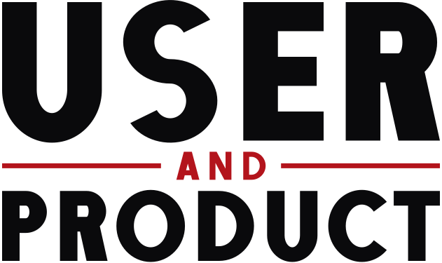

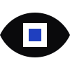
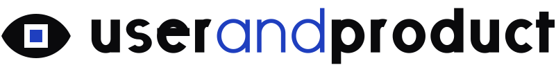
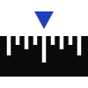
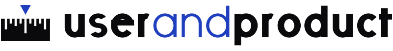
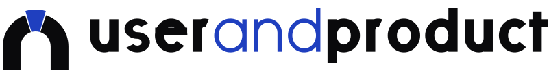
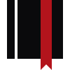
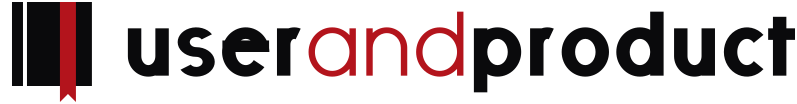
Why it reads as startup. All twelve share one home-drawn geometric lowercase with round, even strokes, and all twelve turn “and” into a thin, bright blue or red: a colour-swap trick that is the first thing you see and the oldest device in app branding. The marks then explain the name instead of standing for it: rounded app-icon tiles (C, D, F), U-and-P monograms (A, B, F), objects (an eye, a ruler, a keystone, a bookmark ribbon, a cradle) and punctuation tricks (pilcrow, et). Next to row 1 they read as a product with an onboarding flow, not a publication with a back catalogue.
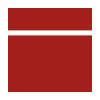


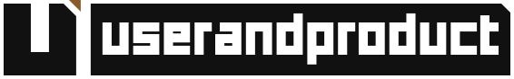
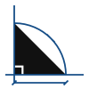
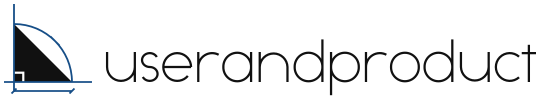
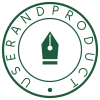
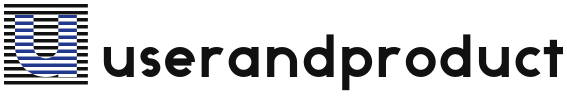
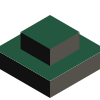

Why it reads as startup. Ten art directions became ten costumes. Half the set uses thin or light type (M2, M4, M5, M6, M7, M10), which looks fragile beside The Economist or Stripe. The rest lean on effects and pictures: a skyscraper crest, a set square, a notary seal with a pen nib, a striped u, an isometric 3D plinth, a slab of pixel type. Gold, green and brick accents arrive with each one. Every mark carries a whole story; none of them looks like it has been there for fifty years.

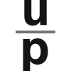
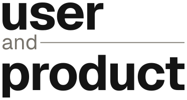

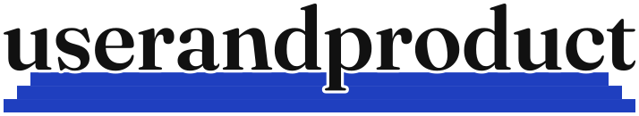

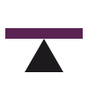
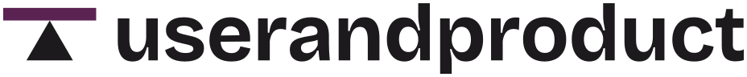
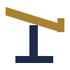
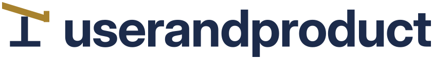
Why it reads as startup. The closest round, and the wordmarks show it: N2's serif capitals and N6's heavy serif are the first type that looks settled. They are undone by what is added. N1 keeps the blue “and” and an app-icon tile; N2 hangs double rules that read as an invitation card; N3 sets “and” small and grey like a startup tagline. N5, N6 and N7 depict authority instead of having it (a gilded tablet dated MMXXVI, a podium, a stair with a red block on top), and N8 to N10 are three more metaphors (north arrow, fulcrum, lectern) in three more palettes.
Three devices from the references that fit a practitioner magazine, and the things we stop doing.
1
A serif or a heavy grotesque, set once and left alone: no colour swaps inside the word, no drawn letters, weight that holds at 16px. The name is the logo.
For us: “userandproduct” in one weight and one colour, from a real typeface (the type of round 3's N2 and N6, without the rules or the podium).
2
Built from one or two primitives (a disc, a cut, an overlap), meaning nothing on its own and earning its meaning by repetition. It is not a picture of anything.
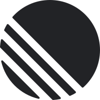
For us: optional. If there is a symbol, it is two shapes at most, and it still works when nobody can say what it is.
3
A single colour owned outright and used as a flag, a block or a page tint; everything else stays black and white. No second accent.
For us: pick one colour and use it as a field (a block, a page tint, a flag), not as a highlight on a word.
Each shown with the concept of ours that did it.